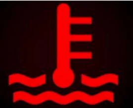
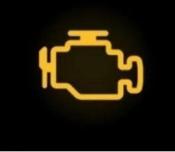
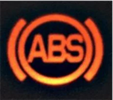
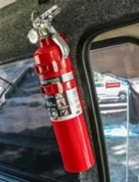

Lý thuyết lái xe · Chương 4
Cấu tạo và sửa chữa
Nhận biết các bộ phận của ô tô, công dụng của hệ thống trên xe và ý nghĩa của đèn báo trên bảng đồng hồ.
37 câu hỏi, từ câu 264 đến câu 300. Nguồn nội dung · Bộ 600 câu hỏi dùng cho sát hạch lái xe cơ giới đường bộ · Cục CSGT, 2025.
Đi đến nhóm câu hỏi
Câu hỏi và đáp án
Câu 264 Phương pháp kiểm tra mức dầu bôi trơn động cơ nào dưới đây là đúng?
- Kiểm tra que thăm dầu trên các-te. Quan sát vệt dầu trên que thăm, mức dầu này phải nằm ở mức tối đa được thể hiện trên que thăm.
- Rút que thăm dầu trên các-te. Quan sát vệt dầu trên que thăm, mức dầu này phải nằm ở mức tối thiểu được thể hiện trên que thăm.
- Rút que thăm dầu trên các-te, lau sạch que thăm sau đó cắm vào các-te và rút ra quan sát vệt dầu trên que thăm, mức dầu phải nằm trong khoảng vạch mức tối thiểu và tối đa được thể hiện trên que thăm.
Xem đáp án
C. Rút que thăm dầu trên các-te, lau sạch que thăm sau đó cắm vào các-te và rút ra quan sát vệt dầu trên que thăm, mức dầu phải nằm trong khoảng vạch mức tối thiểu và tối đa được thể hiện trên que thăm.
Câu 265 Xe ô tô tham gia giao thông đường bộ phải bảo đảm các quy định về chất lượng, an toàn kỹ thuật và bảo vệ môi trường nào dưới đây?
- Kính chắn gió, kính cửa phải là loại kính an toàn, bảo đảm tầm nhìn cho người điều khiển; có đủ hệ thống hãm và hệ thống chuyển hướng có hiệu lực, tay lái xe ô tô ở bên trái của xe, có còi với âm lượng đúng quy chuẩn kỹ thuật.
- Có đủ đèn chiếu sáng gần và xa, đèn soi biển số, đèn báo hãm, đèn tín hiệu; có đủ bộ phận giảm thanh, giảm khói, các kết cấu phải đủ độ bền và bảo đảm tính năng vận hành ổn định.
- Cả hai ý trên.
Xem đáp án
C. Cả hai ý trên.
Câu 266 Xe mô tô và xe ô tô tham gia giao thông trên đường bộ có bắt buộc phải đủ bộ phận giảm thanh không?
- Không bắt buộc.
- Bắt buộc.
- Tùy từng trường hợp.
Xem đáp án
B. Bắt buộc.
Câu 267 Xe ô tô tham gia giao thông trên đường bộ phải có đủ các loại đèn nào dưới đây?
- Đèn chiếu sáng gần và xa.
- Đèn soi biển số, đèn báo hãm và đèn tín hiệu.
- Dàn đèn pha trên nóc xe.
- Ý 1 và ý 2.
Xem đáp án
D. Ý 1 và ý 2.
Câu 268 Kính chắn gió của xe ô tô phải bảo đảm yêu cầu nào dưới đây?
- Là loại kính an toàn, kính nhiều lớp, đúng quy cách, không rạn nứt, bảo đảm hình ảnh quan sát rõ ràng, không bị méo mó.
- Là loại kính trong suốt, không rạn nứt, bảo đảm tầm nhìn cho người điều khiển về phía trước mặt và hai bên.
Xem đáp án
A. Là loại kính an toàn, kính nhiều lớp, đúng quy cách, không rạn nứt, bảo đảm hình ảnh quan sát rõ ràng, không bị méo mó.
Câu 269 Bánh xe, lốp lắp cho xe ô tô phải bảo đảm an toàn kỹ thuật như thế nào dưới đây?
- Bánh xe phải có kết cấu chắc chắn, lắp đặt đúng quy cách của nhà sản xuât.
- Lốp phải đủ số lượng, đủ áp suất, không phồng rộp, đúng cỡ lốp của nhà sản xuất hoặc tài liệu kỹ thuật quy định; lốp trên cùng một trục của xe sử dụng trong điều kiện hoạt động bình thường phải cùng kiểu loại.
- Cả hai ý trên.
Xem đáp án
C. Cả hai ý trên.
Câu 270 Hệ thống lái trên xe ô tô phải bảo đảm yêu cầu nào dưới đây?
- Bảo đảm cho xe chuyển hướng chính xác, điều khiển nhẹ nhàng, an toàn ở mọi vận tốc và tải trọng trong phạm vi tính năng kỹ thuật cho phép của xe.
- Khi hoạt động các cơ cấu chuyển động của hệ thống lái không được va chạm với bất kỳ bộ phận nào của xe; khi quay vô lăng lái về bên phải và bên trái thì không được có sự khác biệt đáng kể về lực tác động lên vành tay lái.
- Cả hai ý trên.
Xem đáp án
C. Cả hai ý trên.
Câu 271 Mục đích của bảo dưỡng thường xuyên đối với xe ô tô có tác dụng gì dưới đây?
- Bảo dưỡng ô tô thường xuyên làm cho ô tô luôn luôn có tính năng kỹ thuật tốt, giảm cường độ hao mòn của các chi tiết, kéo dài tuổi thọ của xe.
- Ngăn ngừa và phát hiện kịp thời các hư hỏng và sai lệch kỹ thuật để khắc phục, giữ gìn được hình thức bên ngoài.
- Cả hai ý trên.
Xem đáp án
C. Cả hai ý trên.
Câu 272 Trong các nguyên nhân nêu dưới đây, nguyên nhân nào làm động cơ diesel không nổ?
- Hết nhiên liệu, lõi lọc nhiên liệu bị tắc, lọc khí bị tắc, nhiên liệu lẫn không khí, tạp chất.
- Hết nhiên liệu, lõi lọc nhiên liệu bị tắc, lọc khí bị tắc, nhiên liệu lẫn không khí, không có tia lửa điện.
- Hết nhiên liệu, lõi lọc nhiên liệu bị tắc, lọc khí bị tắc, nhiên liệu lẫn không khí và nước, không có tia lửa điện.
Xem đáp án
A. Hết nhiên liệu, lõi lọc nhiên liệu bị tắc, lọc khí bị tắc, nhiên liệu lẫn không khí, tạp chất.
Câu 273 Ống xả lắp trên xe ô tô phải bảo đảm yêu cầu an toàn kỹ thuật nào dưới đây?
- Ống xả không được đặt ở vị trí có thể gây cháy xe hoặc ảnh hưởng đến người ngồi trên xe và gây cản trở hoạt động của hệ thống khác.
- Miệng thoát khí thải của ống xả không được hướng về phía trước và không được hướng về bên phải theo chiều tiến của xe.
- Cả hai ý trên.
Xem đáp án
C. Cả hai ý trên.
Câu 274 Dây đai an toàn lắp trên xe ô tô phải bảo đảm yêu cầu an toàn kỹ thuật nào dưới đây?
- Đủ số lượng, lắp đặt chắc chắn không bị rách, đứt, khóa cài đóng, mở nhẹ nhàng, không tự mở, không bị kẹt; kéo ra thu vào dễ dàng, cơ cấu hãm giữ chặt dây khi giật dây đột ngột.
- Đủ số lượng, lắp đặt chắc chắn không bị rách, đứt, khóa cài đóng, mở nhẹ nhàng, không tự mở, không bị kẹt; kéo ra thu vào dễ dàng, cơ cấu hãm mở ra khi giật dây đột ngột.
- Cả hai ý trên.
Xem đáp án
A. Đủ số lượng, lắp đặt chắc chắn không bị rách, đứt, khóa cài đóng, mở nhẹ nhàng, không tự mở, không bị kẹt; kéo ra thu vào dễ dàng, cơ cấu hãm giữ chặt dây khi giật dây đột ngột.
Câu 275 Thế nào là động cơ 4 kỳ?
- Là loại động cơ: để hoàn thành một chu trình công tác của động cơ, pít tông thực hiện 2 (hai) hành trình, trong đó có một lần sinh công.
- Là loại động cơ: để hoàn thành một chu trình công tác của động cơ, pít tông thực hiện 4 (bốn) hành trình, trong đó có một lần sinh công.
Xem đáp án
B. Là loại động cơ: để hoàn thành một chu trình công tác của động cơ, pít tông thực hiện 4 (bốn) hành trình, trong đó có một lần sinh công.
Câu 276 Công dụng của hệ thống bôi trơn đối với động cơ ô tô?
- Cung cấp một lượng dầu bôi trơn đủ và sạch dưới áp suất nhất định đi bôi trơn cho các chi tiết của động cơ để giảm ma sát, giảm mài mòn, làm kín, làm sạch, làm mát và chống gỉ.
- Cung cấp một lượng nhiên liệu đầy đủ và sạch để cho động cơ ô tô hoạt động.
- Cả hai ý trên.
Xem đáp án
A. Cung cấp một lượng dầu bôi trơn đủ và sạch dưới áp suất nhất định đi bôi trơn cho các chi tiết của động cơ để giảm ma sát, giảm mài mòn, làm kín, làm sạch, làm mát và chống gỉ.
Câu 277 Niên hạn sử dụng của xe ô tô tải (tính bắt đầu từ năm sản xuất) không quá bao nhiêu năm?
- 15 năm.
- 20 năm.
- 25 năm.
Xem đáp án
C. 25 năm.
Câu 278 Niên hạn sử dụng của xe ô tô chở người trên 8 chỗ ngồi (không kể chỗ của người lái xe) tính bắt đầu từ năm sản xuất không quá bao nhiêu năm?
- 5 năm.
- 20 năm.
- 25 năm.
Xem đáp án
B. 20 năm.
Câu 279 Hãy nêu công dụng của động cơ xe ô tô?
- Khi làm việc, nhiệt năng được biến đổi thành cơ năng làm trục khủy động cơ quay, truyền lực đến các bánh xe chủ động tạo ra chuyển động tịnh tiến cho xe ô tô.
- Khi làm việc, cơ năng được biến đổi thành nhiệt năng và truyền đến các bánh xe chủ động tạo ra chuyển động tịnh tiến cho xe ô tô.
- Cả hai ý trên.
Xem đáp án
A. Khi làm việc, nhiệt năng được biến đổi thành cơ năng làm trục khủy động cơ quay, truyền lực đến các bánh xe chủ động tạo ra chuyển động tịnh tiến cho xe ô tô.
Câu 280 Hãy nêu công dụng hệ thống truyền lực của xe ô tô?
- Dùng để truyền mô men quay từ động cơ tới các bánh xe chủ động của xe ô tô.
- Dùng để thay đổi hướng chuyển động hoặc giữ cho xe ô tô chuyển động ổn định theo hướng xác định.
- Dùng để làm giảm tốc độ, dừng chuyển động của xe ô tô.
Xem đáp án
A. Dùng để truyền mô men quay từ động cơ tới các bánh xe chủ động của xe ô tô.
Câu 281 Hãy nêu công dụng ly hợp (côn) của xe ô tô?
- Dùng để truyền mô men xoắn giữa các trục không cùng nằm trên một đường thẳng và góc lệch trục luôn thay đổi trong quá trình xe ô tô chuyển động.
- Dùng để truyền hoặc ngắt truyền động từ động cơ đến hộp số của xe ô tô.
- Dùng để truyền truyền động từ hộp số đến bánh xe chủ động của ô tô.
Xem đáp án
B. Dùng để truyền hoặc ngắt truyền động từ động cơ đến hộp số của xe ô tô.
Câu 282 Hãy nêu công dụng hộp số của xe ô tô?
- Truyền và tăng mô men xoắn giữa các trục vuông góc nhau, bảo đảm cho các bánh xe chủ động quay với tốc độ khác nhau khi sức cản chuyển động ở bánh xe hai bên không bằng nhau.
- Truyền và thay đổi mô men xoắn giữa các trục không cùng nằm trên một đường thẳng và góc lệch trục luôn thay đổi trong quá trình ô tô chuyển động, chuyển số êm dịu, dễ điều khiển.
- Truyền và thay đổi mô men từ động cơ đến bánh xe chủ động, cắt truyền động từ động cơ đến bánh xe chủ động, bảo đảm cho xe ô tô chuyển động lùi.
Xem đáp án
C. Truyền và thay đổi mô men từ động cơ đến bánh xe chủ động, cắt truyền động từ động cơ đến bánh xe chủ động, bảo đảm cho xe ô tô chuyển động lùi.
Câu 283 Hãy nêu công dụng hệ thống lái của xe ô tô?
- Dùng để thay đổi mô men từ động cơ tới các bánh xe chủ động khi xe ô tô chuyển động theo hướng xác định.
- Dùng để thay đổi mô men giữa các trục vuông góc nhau khi xe ô tô chuyển động theo hướng xác định.
- Dùng để thay đổi hướng chuyển động hoặc giữ cho xe ô tô chuyển động ổn định theo hướng xác định.
Xem đáp án
C. Dùng để thay đổi hướng chuyển động hoặc giữ cho xe ô tô chuyển động ổn định theo hướng xác định.
Câu 284 Hãy nêu công dụng hệ thống phanh của xe ô tô?
- Dùng để giảm tốc độ, dừng chuyển động của xe ô tô và giữ cho xe ô tô đứng yên trên dốc.
- Dùng để thay đổi hướng chuyển động hoặc giữ cho xe ô tô chuyển động ổn định theo hướng xác định.
- Dùng để truyền hoặc ngắt truyền động từ động cơ đến bánh xe chủ động của xe ô tô.
Xem đáp án
A. Dùng để giảm tốc độ, dừng chuyển động của xe ô tô và giữ cho xe ô tô đứng yên trên dốc.
Câu 285 Đèn phanh trên xe mô tô có tác dụng gì dưới đây?
- Có tác dụng cảnh báo cho các xe phía sau biết xe đang giảm tốc để chủ động tránh hoặc giảm tốc để tránh va chạm.
- Có tác dụng định vị vào ban đêm với các xe từ phía sau tới để tránh va chạm.
- Cả hai ý trên.
Xem đáp án
C. Cả hai ý trên.
Câu 286 Khi động cơ ô tô đã khởi động, bảng đồng hồ xuất hiện ký hiệu như hình vẽ dưới đây, báo hiệu tình trạng như thế nào của xe ô tô?

- Nhiệt độ nước làm mát động cơ quá ngưỡng cho phép.
- Áp suất lốp không đủ.
- Đang hãm phanh tay.
- Cần kiểm tra động cơ.
Xem đáp án
A. Nhiệt độ nước làm mát động cơ quá ngưỡng cho phép.
Câu 287 Khi động cơ ô tô đã khởi động, bảng đồng hồ xuất hiện ký hiệu như hình vẽ dưới đây, báo hiệu tình trạng như thế nào của xe ô tô?

- Báo hiệu hệ thống chống bó cứng khi phanh bị lỗi.
- Áp suất lốp không đủ.
- Đang hãm phanh tay.
- Cần kiểm tra động cơ.
Xem đáp án
D. Cần kiểm tra động cơ.
Câu 288 Khi động cơ ô tô đã khởi động, bảng đồng hồ xuất hiện ký hiệu như hình vẽ dưới đây, báo hiệu tình trạng như thế nào của xe ô tô?
- Báo hiệu thiếu dầu phanh.
- Áp suất lốp không đủ.
- Đang hãm phanh tay.
- Sắp hết nhiên liệu.
Xem đáp án
B. Áp suất lốp không đủ.
Câu 289 Khi động cơ ô tô đã khởi động, bảng đồng hồ xuất hiện ký hiệu như hình vẽ dưới đây, báo hiệu tình trạng như thế nào của xe ô tô?

- Báo hiệu hệ thống chống bó cứng phanh bị lỗi.
- Áp suất lốp không đủ.
- Đang hãm phanh tay.
- Sắp hết nhiên liệu.
Xem đáp án
A. Báo hiệu hệ thống chống bó cứng phanh bị lỗi.
Câu 290 Khi khởi động xe ô tô số tự động có trang bị chìa khóa thông minh có cần đạp hết hành trình bàn đạp chân phanh hay không?
- Phải đạp hết hành trình bàn đạp chân phanh.
- Không cần đạp phanh.
- Tùy từng trường hợp.
Xem đáp án
A. Phải đạp hết hành trình bàn đạp chân phanh.
Câu 291 Ắc quy được trang bị trên xe ô tô có tác dụng gì dưới đây?
- Giúp người lái xe kịp thời tạo xung lực tối đa lên hệ thống phanh trong khoảnh khắc đầu tiên của tình huống khẩn cấp.
- Ổn định chuyển động của xe ô tô khi đi vào đường vòng.
- Hỗ trợ người lái xe khởi hành ngang dốc.
- Để tích trữ điện năng, cung cấp cho các phụ tải khi máy phát chưa làm việc.
Xem đáp án
D. Để tích trữ điện năng, cung cấp cho các phụ tải khi máy phát chưa làm việc.
Câu 292 Máy phát điện được trang bị trên xe ô tô có tác dụng gì dưới đây?
- Để phát điện năng cung cấp cho các phụ tải làm việc và nạp điện cho ắc quy.
- Ổn định chuyển động của xe ô tô khi đi vào đường vòng.
- Hỗ trợ người lái xe khởi hành ngang dốc.
- Để tích trữ điện năng và cung cấp điện cho các phụ tải làm việc.
Xem đáp án
A. Để phát điện năng cung cấp cho các phụ tải làm việc và nạp điện cho ắc quy.
Câu 293 Dây đai an toàn được trang bị trên xe ô tô có tác dụng gì dưới đây?
- Ổn định chuyển động của xe ô tô khi đi vào đường vòng.
- Giữ chặt người lái và hành khách trên ghế ngồi khi xe ô tô đột ngột dừng lại.
Xem đáp án
B. Giữ chặt người lái và hành khách trên ghế ngồi khi xe ô tô đột ngột dừng lại.
Câu 294 Túi khí được trang bị trên xe ô tô có tác dụng gì dưới đây?
- Giữ chặt người lái và hành khách trên ghế ngồi khi xe ô tô đột ngột dừng lại.
- Giảm khả năng va đập của một số bộ phận cơ thể quan trọng với các vật thể trong xe.
- Hấp thụ một phần lực va đập lên người lái và hành khách.
- Ý 2 và ý 3.
Xem đáp án
D. Ý 2 và ý 3.
Câu 295 Khi động cơ ô tô đã khởi động, bảng đồng hồ xuất hiện ký hiệu như hình vẽ dưới đây không tắt trong thời gian dài, báo hiệu tình trạng như thế nào của xe ô tô?
- Nhiệt độ nước làm mát động cơ quá ngưỡng cho phép.
- Áp suất lốp không đủ.
- Đang hãm phanh tay.
- Hệ thống lái gặp sự cố.
Xem đáp án
D. Hệ thống lái gặp sự cố.
Câu 296 Trên xe ô tô có trang bị thiết bị như hình vẽ dưới đây có tác dụng gì?
- Dùng để kích (hay nâng) xe ô tô.
- Vặn ốc lắp bánh xe.
- Ổn định chuyển động của xe ô tô khi đi vào đường vòng.
- Giữ chặt người lái và hành khách trên ghế ngồi khi xe ô tô đột ngột dừng lại.
Xem đáp án
A. Dùng để kích (hay nâng) xe ô tô.
Câu 297 Trên xe ô tô có trang bị thiết bị như hình vẽ dưới đây, dùng để làm gì?
- Thay lốp xe.
- Chữa cháy.
- Phá cửa kính xe ô tô trong các trường hợp khẩn cấp.
- Vặn ốc để tháo lắp bánh xe.
Xem đáp án
C. Phá cửa kính xe ô tô trong các trường hợp khẩn cấp.
Câu 298 Trên xe ô tô có trang bị thiết bị như hình vẽ dưới đây, dùng để làm gì?

- Thay lốp xe.
- Chữa cháy trong các trường hợp hỏa hoạn.
- Cầm máu cho người bị nạn.
Xem đáp án
B. Chữa cháy trong các trường hợp hỏa hoạn.
Câu 299 Nút bấm biểu tượng như hình vẽ trên xe ô tô có ý nghĩa như thế nào?
- Báo hiệu xin đường cho xe đi thẳng.
- Báo hiệu hệ thống phanh bị lỗi.
- Báo hiệu xe đang ở tình huống nguy hiểm.
- Báo hiệu đến thời gian cần bảo dưỡng.
Xem đáp án
C. Báo hiệu xe đang ở tình huống nguy hiểm.
Câu 300 Khi động cơ đã hoạt động, bảng đồng hồ xuất hiện biểu tượng hình vẽ dưới đây, báo hiệu tình trạng như thế nào của xe?
- Báo hiệu hệ thống túi khí đã bật.
- Báo hiệu đèn chiếu sáng xa đã bật.
- Báo hiệu chế độ lái tiết kiệm nhiên liệu đã bật.
- Báo hiệu đèn cảnh báo khoảng cách đã bật.
Xem đáp án
C. Báo hiệu chế độ lái tiết kiệm nhiên liệu đã bật.